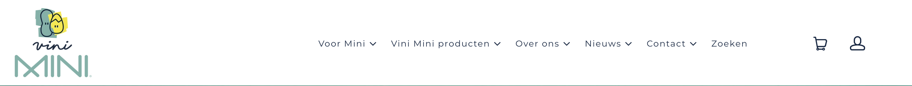
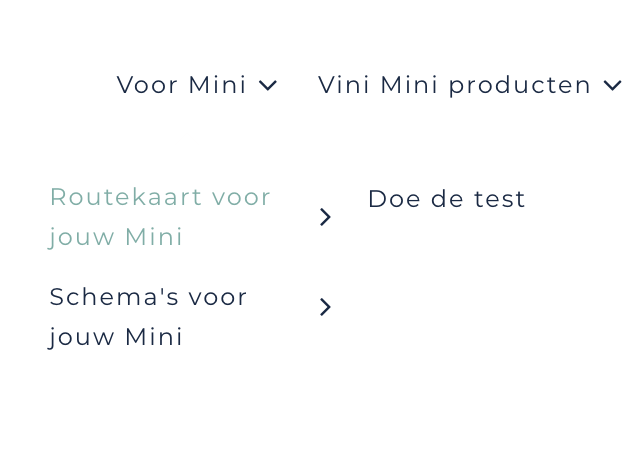

Navigatie
Formulieren zijn erg belangrijk op de website, je moet namelijk een eigen Mini aan kunnen maken. Teveneens ook een account. Zonder formulieren gaat dit niet.
Navigatie:
- Het menu bestaat uit een unordered list met daar in ordered lists. Er wordt ook gespeeld met margins, widths en paddings.

Het doel van de navigatiebalk is om onze doelgroep te helpen moeiteloos door de Vini Mini website te bladeren. De navigatiebalk licht helemaal bovenaan op alle paginas in de website.
Hoe word de navigatiebalk gebruikt?
De Navigatiebalk bestaat uit Voor Mini, Producten, Over Ons, Nieuws en Contact. Elke balk/button verwijst naar een specifieke
pagina. Voor Mini verwijst naar de routekaart en schema's.
Ook kan je via "Voor Mini" naar de test worden gestuurd. Bij "Producten" kunt u naar de producten (startkit/opvolgkit)
van Vini Mini bekijken. "Over Ons" is waar u de verhaal van Vini Mini kunt lezen.
Nieuws verwijst naar blogs, nieuwsbrief en media van Vini Mini. Contact is waar je contact kunt opnemen met Vini Mini
(telefonisch) en of vragen kunt stellen via mail.
